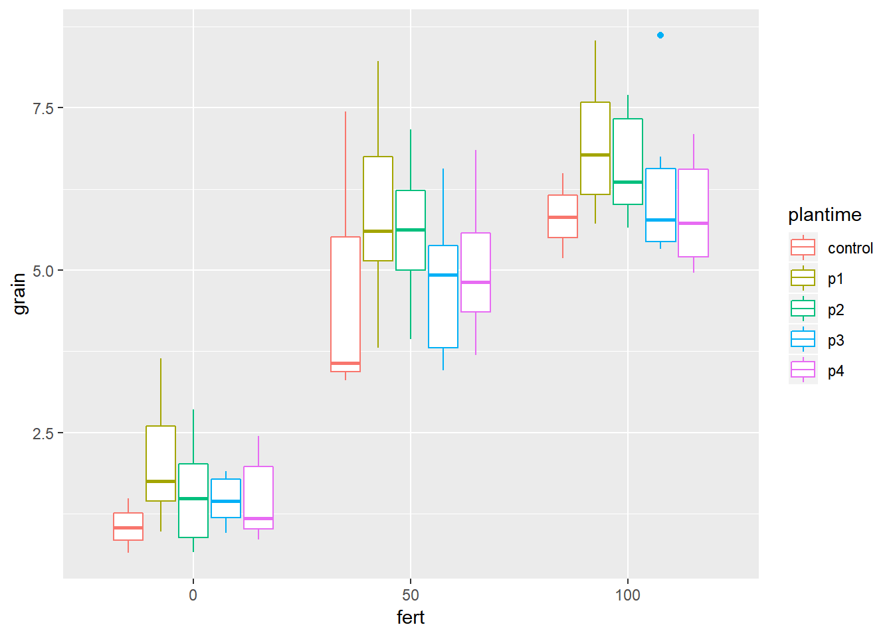
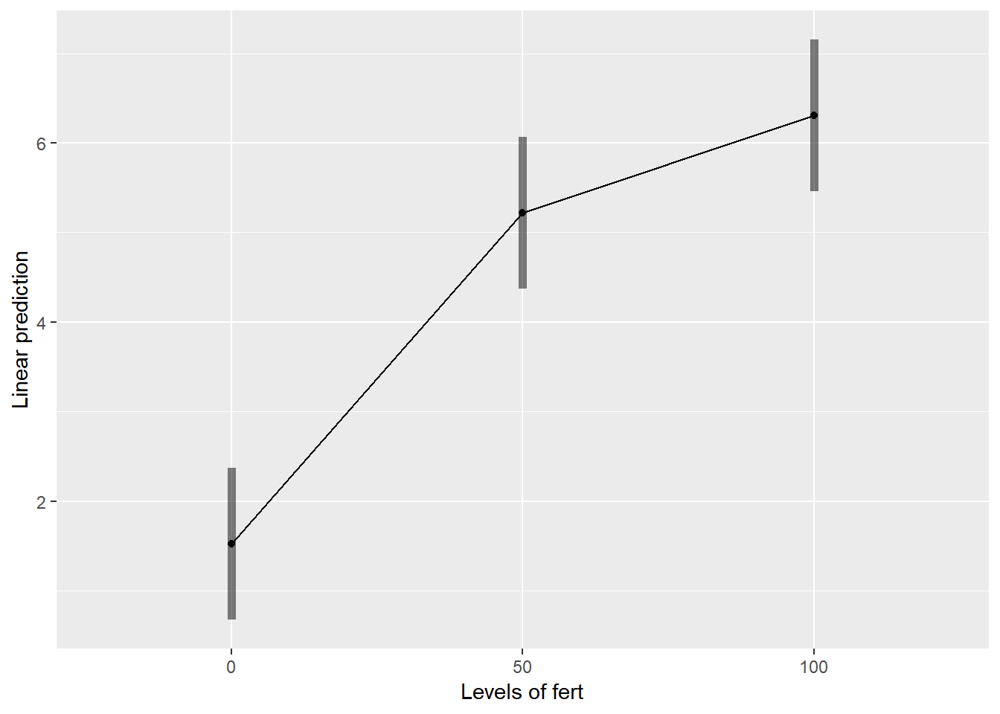

Chapter 6 Relay Planting Example
6.1 Section 1: Steps in analysis using R
- Install R packages needed
library(ggplot2)
library(emmeans)
library(doBy)
library(lmerTest)
library(multcompView)- Import data
relay <- read.csv("C:/Users/Admin/Desktop/RelayP.csv")- Check and update data
summary(relay)
str(relay)
relay$fert<-factor(relay$fert)- Explore data
ggplot(data=relay,aes(y=grain,x=fert))+geom_boxplot(aes(colour=plantime))
ggplot(data=relay,aes(y=grain,x=plantime))+geom_boxplot(aes(colour=fert))
summaryBy(grain~fert+plantime, data=relay, FUN=c(mean,median,sd))- Specify a model for data
relaymodel<-lmer(grain~plantime*fert+(1|rep), data=RelayP)- Check the model
plot(relaymodel)
qqnorm(resid(relaymodel))
qqline(resid(relaymodel))- Interpret the model
anova(relaymodel, ddf="Kenward-Roger")
print(VarCorr(relaymodel), comp=("Variance"))- Present the results from the model
emmip(relaymodel,fert~plantime,CIs = TRUE)
emmip(relaymodel,~fert,CIs = TRUE)
emmip(relaymodel,~plantime,CIs = TRUE)
emmeans(relaymodel, ~fert*plantime)6.2 Section 2: Explanation of Steps
6.2.1 1. Install R packages needed
A number of packages following packages were used during data exploration and analysis. For a general introduction explaining what R packages are and how they work, this is a really useful guide https://www.datacamp.com/community/tutorials/r-packages-guide. For each of these packages to be installed, using install.packages(), this requires a reliable internet connection and a correctly installed version of R and RStudio. If you are having difficulties installing these packages please ask for help.
install.packages("ggplot2")
library(ggplot2)ggplot2 This package provides a powerful graphics language for creating elegant and complex graphs in R.
install.packages("emmeans")
library(emmeans)emmeans Estimated marginal means (also known as least squares means) helps provide expected mean values and confidence intervals from statistical models.
install.packages("doBy")
library(doBy)doByAllows easy production of summary statistic tables
install.packages("lmerTest")
library(lmerTest)lmerTest Allows produce of flexible mixed effects regression models, similar to REML in Genstat.
install.packages("multcompView")
library(multcompView)multcompView allows for mean seperation methods on analyses
6.2.2 2. Import data
Our data set saved as a CSV file, so we can use the read.csv commmand to import the data. We are going to assign the name of the data with R to be fallow2. Remember in R Studio you could also use the “Import Dataset” menu to import a dataset.
relay <- read.csv("C:/Users/Admin/Desktop/RelayP.csv")6.2.3 3. Check and update data
When reading data into R it is always useful to check that data is in the format expected. How many variables are there? How many rows? How have the columns been read in? The summary command can help to show if the data is being treated correctly.
summary(relay)## rep plot plantime fert distance
## repl 1:27 plot 1 : 3 control: 9 Min. : 0 Min. : 0.00
## repl 2:27 plot 10: 3 p1 :18 1st Qu.: 0 1st Qu.: 8.00
## repl 3:27 plot 11: 3 p2 :18 Median : 50 Median :16.00
## plot 12: 3 p3 :18 Mean : 50 Mean :15.78
## plot 13: 3 p4 :18 3rd Qu.:100 3rd Qu.:23.00
## plot 14: 3 Max. :100 Max. :31.00
## (Other):63
## grain
## Min. :0.642
## 1st Qu.:1.905
## Median :5.104
## Mean :4.399
## 3rd Qu.:6.085
## Max. :8.614
## Where data is being treated as a numeric variable (i.e. a number) summary provides statistics like the mean, min and max. Where data is being treated like a categorical variable (i.e. a group) then summary provides frequency tables.
From the results we can see that the variables rep and plot are being considered as numeric variables. However these are grouping variables, not number variables, the numbers used are simply codes. If we do not rectify this then our analysis later will be incorrect and meaningless.
This can also be seen more explicitly using the str() function.
str(relay)## 'data.frame': 81 obs. of 6 variables:
## $ rep : Factor w/ 3 levels "repl 1","repl 2",..: 1 1 1 1 1 1 1 1 1 1 ...
## $ plot : Factor w/ 27 levels "plot 1","plot 10",..: 1 12 21 22 23 24 25 26 27 2 ...
## $ plantime: Factor w/ 5 levels "control","p1",..: 5 5 4 1 5 4 3 5 5 1 ...
## $ fert : int 50 0 50 100 100 0 0 50 0 0 ...
## $ distance: int 1 2 3 4 5 6 7 8 9 10 ...
## $ grain : num 6.84 2.44 5.2 6.49 6.08 ...So we need to convert these variables into factors.
relay$fert<-factor(relay$fert)These commands take the column rep within the data frame fallow, converts into a factor and saves the result in a column called rep within fallow.
6.2.4 4. Explore data
6.2.4.1 Plots
We are now interesting in assessing the relationship between yield and striga - so we want to produce a plot of striga against yield, with different coloured points denoting each treatment.
ggplot(data=relay,aes(y=grain,x=fert))+geom_boxplot(aes(colour=plantime)) We can see from the distribution of striga that there are some farms with very high levels of striga, and some farms with no striga. The big range of values makes it hard to make interpretations from this plot, so taking a square root transformation may help to visualise the relationship. A log transformation will not help here because of the large number of 0 values of striga.
ggplot(data=relay,aes(y=grain,x=plantime))+geom_boxplot(aes(colour=fert))6.2.4.2 Summary Statistics
To produce summary statistics, by group, there are many options within R. One option is to use the summaryBy function, from the doBy library. The code used for this is quite similar to the code we will use to produce models in a later step.
summaryBy(grain~fert+plantime, data=relay, FUN=c(mean,median,sd))## fert plantime grain.mean grain.median grain.sd
## 1 0 control 1.052333 1.0340 0.4198003
## 2 0 p1 2.055333 1.7495 0.9954934
## 3 0 p2 1.559667 1.4835 0.8458025
## 4 0 p3 1.457000 1.4465 0.3850964
## 5 0 p4 1.474500 1.1820 0.6817175
## 6 50 control 4.769000 3.5660 2.3196256
## 7 50 p1 5.890000 5.5995 1.5543606
## 8 50 p2 5.592000 5.6170 1.1410732
## 9 50 p3 4.804333 4.9295 1.1960488
## 10 50 p4 5.030500 4.8130 1.1319579
## 11 100 control 5.831667 5.8200 0.6525782
## 12 100 p1 6.934000 6.7720 1.0728338
## 13 100 p2 6.603667 6.3615 0.8626484
## 14 100 p3 6.272167 5.7760 1.2615166
## 15 100 p4 5.890833 5.7235 0.87591156.2.5 5. Specify a model for data
In this design, an RCBD, we have one treatment factor, “treat”, and one layout factor “rep”. More information about model fitting can be found in section 2.
relaymodel<-lmer(grain~plantime*fert+(1|rep), data=relay)R is unlike many other software packages in how it fits models. The best way of handling models in R is to assign the model to a name (in this case rcbdmodel1) and then ask R to provide different sorts of output for this model. When you run the above line you will get now output from the data - this is what we expected to see!
6.2.6 6. Check the model
Before interpretting the model any further we should investigate the model validity, to ensure any conclusions we draw are valid. There are 3 assumptions that we can check for using standard model checking plots. 1. Homogeneity (equal variance) 2. Values with high leverage 3. Normality of residuals
The function plot() when used with a model will plot the fitted values from the model against the expected values.
plot(relaymodel)The residual Vs fitted plot is a scatter plot of the Residuals on the y-axis and the fitted on the x-axis and the aim for this plot is to test the assumption of equal variance of the residuals across the range of fitted values. Since the residuals do not funnel out (to form triangular/diamond shape) the assumption of equal variance is met.
We can also see that there are no extreme values in the residuals which might be potentially causing problems with the validity of our conclusions (leverage)
To assess the assumption of normality we can produce a qqplot. This shows us how closely the residuals follow a normal distribution - if there are severe and syste,matic deviations from the line then we may want to consider an alternative distribution.
qqnorm(resid(relaymodel))
qqline(resid(relaymodel))In this case the residuals seem to fit the assumption required for normality.
6.2.7 7. Interpret Model
The anova() function only prints the rows of analysis of variance table for treatment effects when looking at a mixed model fitted using lmer().
anova(relaymodel,ddf="Kenward-Roger")## Type III Analysis of Variance Table with Kenward-Roger's method
## Sum Sq Mean Sq NumDF DenDF F value Pr(>F)
## plantime 10.832 2.708 4 64 2.6160 0.04321 *
## fert 314.749 157.374 2 64 152.0239 < 2e-16 ***
## plantime:fert 1.381 0.173 8 64 0.1668 0.99451
## ---
## Signif. codes: 0 '***' 0.001 '**' 0.01 '*' 0.05 '.' 0.1 ' ' 1ddf=Kenward-Roger tells R which method to use for determining the calculations of the table; this option matches the defaults found within SAS or Genstat. The ANOVA table suggests a highly significant effect of the treatment on the yield.
To obtain the residual variance, and the variance attributed to the blocks we need an additional command. From these number it is possible to reconstruct a more classic ANOVA table, if so desired.
print(VarCorr(relaymodel), comp=("Variance"))## Groups Name Variance
## rep (Intercept) 0.16034
## Residual 1.035196.2.8 8. Present the results from the model
To help understand what the significant result from the ANOVA table means we can produce several plots and tables to help us. First we can use the function emmip() to produce plots of the modelled results, including 95% confidence intervals.
emmip(relaymodel,fert~plantime,CIs = TRUE)Or alternatively
emmip(relaymodel,~fert,CIs = TRUE)## NOTE: Results may be misleading due to involvement in interactions
emmip(relaymodel,~plantime,CIs = TRUE)## NOTE: Results may be misleading due to involvement in interactionsTo obtain the numbers used in creating this graph we can use the function emmeans.
emmeans(relaymodel, ~fert*plantime)## fert plantime emmean SE df lower.CL upper.CL
## 0 control 1.052333 0.631278 40.53 -0.2230062 2.327673
## 50 control 4.769000 0.631278 40.53 3.4936605 6.044339
## 100 control 5.831667 0.631278 40.53 4.5563272 7.107006
## 0 p1 2.055333 0.475373 19.70 1.0627645 3.047902
## 50 p1 5.890000 0.475373 19.70 4.8974312 6.882569
## 100 p1 6.934000 0.475373 19.70 5.9414312 7.926569
## 0 p2 1.559667 0.475373 19.70 0.5670979 2.552235
## 50 p2 5.592000 0.475373 19.70 4.5994312 6.584569
## 100 p2 6.603667 0.475373 19.70 5.6110979 7.596235
## 0 p3 1.457000 0.475373 19.70 0.4644312 2.449569
## 50 p3 4.804333 0.475373 19.70 3.8117645 5.796902
## 100 p3 6.272167 0.475373 19.70 5.2795979 7.264735
## 0 p4 1.474500 0.475373 19.70 0.4819312 2.467069
## 50 p4 5.030500 0.475373 19.70 4.0379312 6.023069
## 100 p4 5.890833 0.475373 19.70 4.8982645 6.883402
##
## Degrees-of-freedom method: kenward-roger
## Confidence level used: 0.95And one method for conducting mean separation analysis, holding striga effect constant, we can use the function cld().
cld(emmeans(relaymodel, ~fert))## NOTE: Results may be misleading due to involvement in interactions## fert emmean SE df lower.CL upper.CL .group
## 0 1.519767 0.3079851 4.08 0.6711501 2.368383 1
## 50 5.217167 0.3079851 4.08 4.3685501 6.065783 2
## 100 6.306467 0.3079851 4.08 5.4578501 7.155083 3
##
## Results are averaged over the levels of: plantime
## Degrees-of-freedom method: kenward-roger
## Confidence level used: 0.95
## P value adjustment: tukey method for comparing a family of 3 estimates
## significance level used: alpha = 0.05cld(emmeans(relaymodel, ~plantime))## NOTE: Results may be misleading due to involvement in interactions## plantime emmean SE df lower.CL upper.CL .group
## control 3.884333 0.4104494 12.04 2.990409 4.778257 1
## p4 4.131944 0.3331034 5.54 3.299984 4.963905 1
## p3 4.177833 0.3331034 5.54 3.345873 5.009794 1
## p2 4.585111 0.3331034 5.54 3.753151 5.417071 1
## p1 4.959778 0.3331034 5.54 4.127817 5.791738 1
##
## Results are averaged over the levels of: fert
## Degrees-of-freedom method: kenward-roger
## Confidence level used: 0.95
## P value adjustment: tukey method for comparing a family of 5 estimates
## significance level used: alpha = 0.05cld(emmeans(relaymodel, ~fert*plantime))## fert plantime emmean SE df lower.CL upper.CL .group
## 0 control 1.052333 0.631278 40.53 -0.2230062 2.327673 1
## 0 p3 1.457000 0.475373 19.70 0.4644312 2.449569 1
## 0 p4 1.474500 0.475373 19.70 0.4819312 2.467069 1
## 0 p2 1.559667 0.475373 19.70 0.5670979 2.552235 1
## 0 p1 2.055333 0.475373 19.70 1.0627645 3.047902 1
## 50 control 4.769000 0.631278 40.53 3.4936605 6.044339 23
## 50 p3 4.804333 0.475373 19.70 3.8117645 5.796902 2
## 50 p4 5.030500 0.475373 19.70 4.0379312 6.023069 23
## 50 p2 5.592000 0.475373 19.70 4.5994312 6.584569 23
## 100 control 5.831667 0.631278 40.53 4.5563272 7.107006 23
## 50 p1 5.890000 0.475373 19.70 4.8974312 6.882569 23
## 100 p4 5.890833 0.475373 19.70 4.8982645 6.883402 23
## 100 p3 6.272167 0.475373 19.70 5.2795979 7.264735 23
## 100 p2 6.603667 0.475373 19.70 5.6110979 7.596235 23
## 100 p1 6.934000 0.475373 19.70 5.9414312 7.926569 3
##
## Degrees-of-freedom method: kenward-roger
## Confidence level used: 0.95
## P value adjustment: tukey method for comparing a family of 15 estimates
## significance level used: alpha = 0.05In the output, groups sharing a letter in the .group are not statistically different from each other.
6.3 Section 3 – Methodological Principles
When adjusting for covariates it is important to consider if the covariate being included is something that could be affected by the treatment variables, or whether it is something which affects the outcome independent of the treatments. If we were confident that striga infestation was not impacted by the choice of treatment then in this analysis